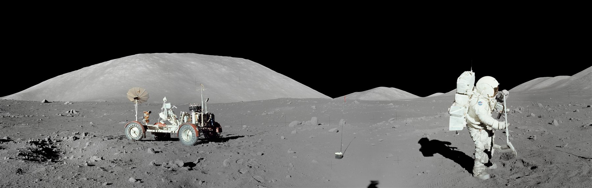
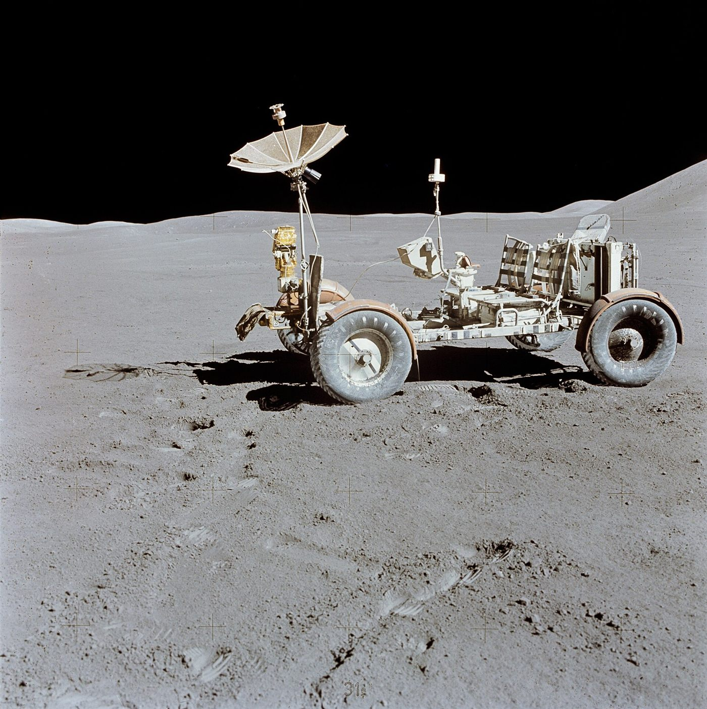

What is a rover?
A robot on wheels that explores where people cannot go.

A lunar rover lesson
No roads. No map. One robot.
Apollo 17 · NASA
A robot on wheels that explores where people cannot go.
It drives, looks, takes photos and sends the data home.
No roads, no map, steep ground, rocks, heat and cold.
Sensors are its eyes. AI helps it choose what to do next.
It reads a map, spots the dangers and picks a safe path.
Seven questions. One drive. One plan.
02 · Challenges

Where should the rover go?
04 · Plan from orbit
05 · Debrief
Steep ground, sharp rocks, deep shadow and huge temperature swings all shape the mission.
Height shows the shape. Slope shows what is safe. Shadow shows where the Sun never reaches.
People choose the goal. The rover checks the ground and picks its next few metres.
Full answers, timings and discussion prompts are in README.md. Use Teacher view in the header to reveal the quiz answers and the rover's hazard map.